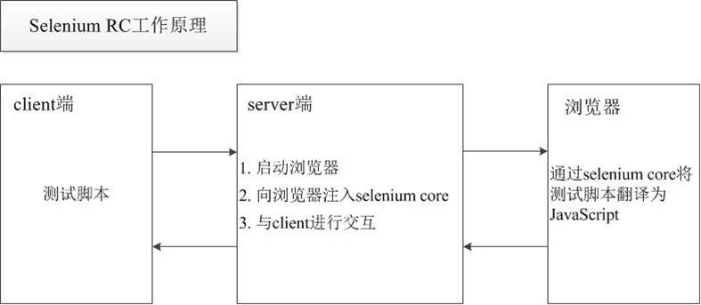

Web自动化测试
目标
1. 为什么要学习Web自动化测试
2. 了解什么是Web自动化测试
3. 了解Web自动化测试常用工具
1. 为什么要学习Web自动化测试
智联招聘
自动化测试岗位-智慧星光
自动化测试岗位-中铁信息


1.1 Web自动化测试的课程目标
课程目标:
掌握selenium web UI界面自动化测试流程、方法，完成web UI界面元素自动化测试。
掌握使用selenium进行web UI测试的方法并结合unittest框架实现用例的管理及报告的输出。
2. 什么是Web自动化测试？
概念：让程序代替人为自动验证Web项目功能的过程
3. 什么Web项目适合做自动化测试？
1.需求变动不频繁
2.项目周期长
3.项目需要回归测试
4. 如何进行Web自动化测试？(主流测试-工具)
1. QTP（收费）
QTP是商业的功能测试工具，收费，支持web，桌面自动化测试。
2. Selenium（开源）【本阶段学习】
Selenium是开源的web自动测试工具，免费，主要做功能测试。
3. Jmeter（开源、Web、接口、性能）
Jmeter是由Apache公司使用Java平台开发的一款测试工具，支持（Web、接口测试、性能测试）
提示：Web测试在通信层(无UI界面)
4. Loadrunner（收费、Web、性能）
Loadrunner是商业性能测试工具，收费，功能强大，适合做复杂场景的性能测试
4.1 主流工具-汇结：
Web自动化测试：selenium
App端自动化测试：Appium、UIautomation
PC客户端（win32）自动化测试：QTP
接口自动化测试：Jmeter、Postman
性能测试：Jmeter、LoadRunner
5. 什么是Selenium？
概念： Selenium是一个用于Web应用程序测试的工具；中文的意思（硒）
selenium是ThoughtWorks公司的一款强大的开源web界面自动化功能测试工具套件，
用来实现整个测试过程的管理，包括读入测试套件、执行测试和记录测试结果。
selenium测试直接运行在浏览器中，模拟手动界面操作。
5.1 Selenium特点
1. 开源软件：源代码开放可以根据需要来增加工具的某些功能
2. 跨平台：linux 、windows 、mac
3. 核心功能：就是可以在多个浏览器上进行自动化测试
4. 多语言：Java、Python、C#、JavaScript、Rub5y等
5. 成熟稳定：目前已经被google , 百度， 腾讯等公司广泛使用
6. 功能强大：能够实现类似商业工具的大部分功能，因为开源性，可实现定制化功能
5.1 Selenium家族(发展史) 【了解】

5.2 Selenium RC和Selenium webdriver的工作原理对比
1. Selenium RC工作原理图

2. Selenium webdriver工作原理图

selenium webdriver执行效率更高的原因：
可以直接操作浏览器，省去了中间环节，操作更直接。
利用浏览器自身特定的api完成命令执行，执行方式更有针对性，执行效率更高。
selenium RC与selenium webdriver的区别：
selenium RC不支持无头浏览器（运行在内存中，不依赖于拥有实际页面的浏览器）。
selenium RC面向过程，selenium webdriver面向对象。
selenium RC不支持移动端自动化测试。
重点：
1. SeleniumIDE
2. Selenium2.0(WebDriver)